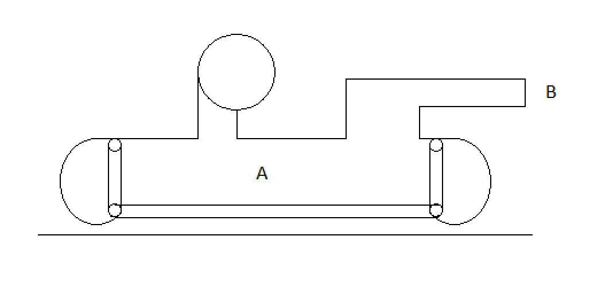

Using Bernoulli’s equation, the total energy under the hovercraft
(point A) is equal to the total energy just outside the nozzle (point B)
Point A is potential energy from the pressure. We’re assuming 0 air
velocity, which means the kinetic energy is 0. Therefore, the energy
at point A can be represented by P⁄p
Point B is kinetic energy. We’re assuming the pressure goes to 0
relative to the pressurized chamber, which means the potential energy
is 0. Therefore, the energy at point B can be represented by
1⁄2 V2

We can set the potential energy from the pressurized chamber equal
to the kinetic energy from the nozzle. Doing this, we get
P⁄p = 1⁄2 V2
We can now solve for the velocity at point B
Now that we know the velocity, we can calculate the area of the
nozzle that is needed to get the thrust that we want. This equation is
F = pV2A.
Now that we know the velocity of the air coming out of the nozzle as
well as the area of the nozzle, we can find the flowrate that is necessary
to sustain the flow coming out of the nozzle while not losing pressure
underneath the hovercraft. Flowrate = V*A
Blowers are often rated by flowrate at different pressures. The chart
provided attempts to provide standardized flowrate vs pressure that can
be used to find a blower that meets the requirements. To calculate the
flowrate at the different pressures, we can use the fact that pressure * volume
will always be the same. This means that Pstandardized *
Volumestandardized = Pcalculated * Volumecalculated
which can be rearranged to Volumestandardized = (Volumecalculated
* Pcalculated) / (Pstandardized) so we can calculate
the volume at each pressure we want to plot.